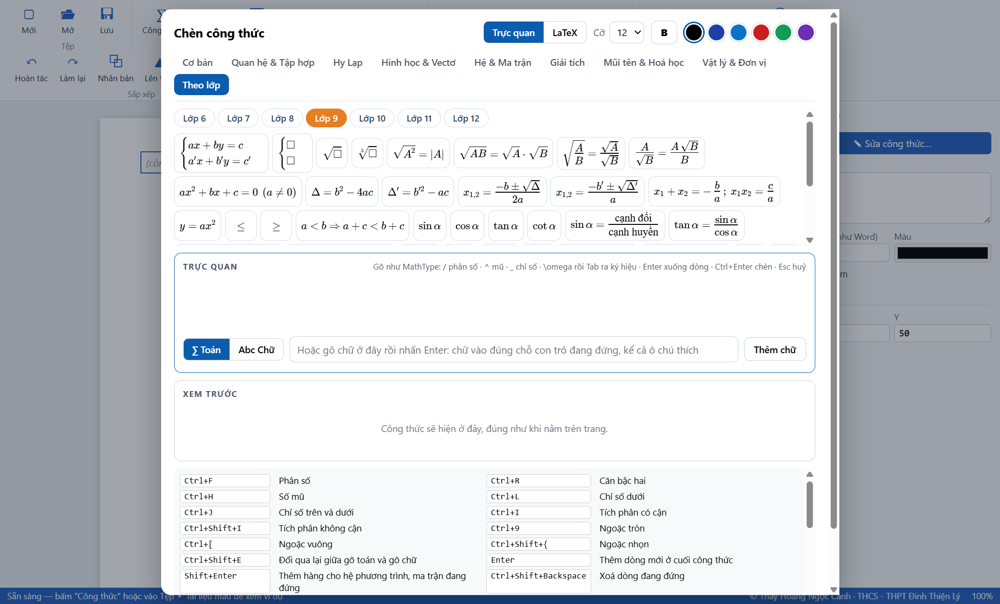
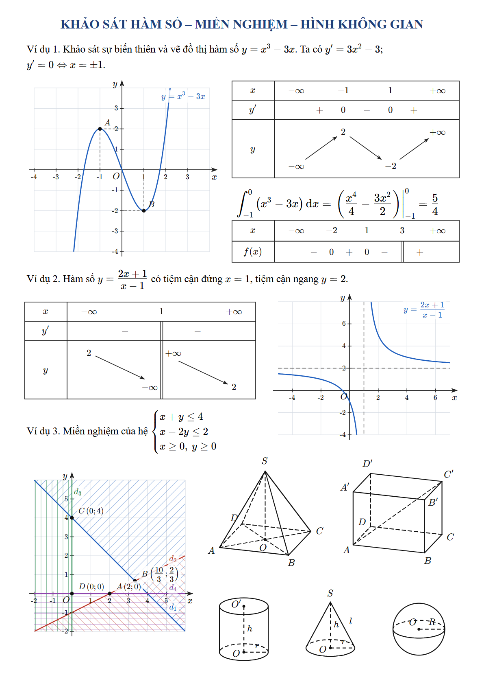

Soạn công thức Toán, đồ thị, bảng biến thiên, miền nghiệm và hình không gian cho chương trình Toán phổ thông Việt Nam, dùng độc lập hoặc ngay trong Word và PowerPoint.
Thiết kế bởi: Thầy Hoàng Ngọc Cảnh Giáo viên trường THCS - THPT Đinh Thiện Lý Email: canhld@gmail.com
Rê chuột lên một nút ký hiệu sẽ thấy phím tắt của nó (nếu có).
5. Ký hiệu và công thức theo lớp 6 – 12
Bốn nhóm cuối trong hộp soạn chia theo môn: Toán theo lớp, Vật lí, Hoá học, Sinh học. Ba môn sau có các mục KHTN 6 – 9, Lớp 10, Lớp 11, Lớp 12 với công thức, đơn vị, công thức hoá học, phương trình phản ứng, sơ đồ lai… của từng lớp. Với Toán: Bấm Lớp 6 … Lớp 12 để xem ký hiệu và công thức mẫu của lớp đó; phần mềm nhớ lớp bạn dùng lần cuối.

Nhóm Theo lớp (đang mở Lớp 9) và bảng phím tắt
Lớp
Nội dung chính
6
Tập hợp, chia hết, ƯCLN/BCNN, luỹ thừa, phân số và hỗn số, số nguyên, điểm – đường thẳng – góc
7
Số hữu tỉ, số thực, căn, giá trị tuyệt đối, tỉ lệ thức, tam giác bằng nhau
8
Hằng đẳng thức, phân thức, hàm số bậc nhất, Pythagore, Thalès, tam giác đồng dạng
9
Hệ phương trình, căn thức, phương trình bậc hai, tỉ số lượng giác, đường tròn, cung, trụ – nón – cầu
10
Mệnh đề, tập hợp, hệ thức lượng, vectơ, toạ độ, ba đường conic, tổ hợp, thống kê
11
Lượng giác, dãy số, giới hạn, mũ và logarit, đạo hàm, quan hệ song song và vuông góc
12
Cực trị, tiệm cận, nguyên hàm và tích phân, toạ độ Oxyz, xác suất có điều kiện
6. Văn bản, đồ thị, bảng, miền nghiệm, hình không gian
Văn bản
Nhấp đúp vào chỗ trống bất kỳ trên trang, hoặc bấm Văn bản rồi nhấp vào trang, và gõ tiếng Việt ngay tại đó.
Công thức trong dòng đặt giữa hai dấu đô la, ví dụ $x^2+1$; hoặc bấm Ctrl+M khi đang gõ để chèn công thức tại con trỏ.
Nhấp đúp vào một công thức trong dòng chữ để sửa riêng công thức đó.
Cú pháp biểu thức (dùng cho đồ thị, bảng biến thiên, xét dấu)
x^3-3x+1 · (2x+1)/(x-1) · sqrt(x) · |x| · sin x · ln(x) · log(x) · e^x · 2^x · pi
Đồ thị hàm số
Nhập mỗi hàm một dòng. Đặt khoảng x, y và bước chia ở mục Hệ trục; có lựa chọn chia trục x theo π/2.
Điểm đánh dấu: A(1; -2), có đường gióng xuống hai trục. Đường nét đứt (tiệm cận): x = 1, y = 2.
Tô hình phẳng giữa hai hàm (hoặc với trục Ox) từ x = a đến x = b.
Bảng biến thiên và bảng xét dấu
Nhập hàm số rồi bấm Lập bảng tự động. Có thể giới hạn khoảng khảo sát.
Sửa tay từng hàng bằng LaTeX, các ô ngăn cách bằng |. Dấu: +, -; x là khoảng không xác định; || là không xác định tại điểm.
Miền nghiệm
Nhập mỗi bất phương trình một dòng, dùng <=, >=, <, >. Bất phương trình ngặt vẽ nét đứt.
Hai cách thể hiện: gạch bỏ phần không là nghiệm (kiểu sách giáo khoa) hoặc tô màu miền nghiệm. Có thể ghi toạ độ các đỉnh.
Hình không gian
Chọn loại hình trong danh sách rồi bấm Chèn hình: chóp tam giác, chóp tứ giác, tứ diện, hộp chữ nhật, lập phương, lăng trụ tam giác, chóp cụt, trụ, nón, nón cụt, cầu.
Nét khuất tự vẽ đứt theo góc nhìn; đổi góc bằng hai ô Xoay ngang và Nhìn từ trên.
Điểm thêm: M = SA (trung điểm), O = AC (tâm), G = ABC (trọng tâm). Đoạn nối thêm: SO, AC, BM.
Hình phẳng
Chọn hình mẫu trong danh sách Hình phẳng rồi bấm Chèn hình. Có 39 mẫu theo chương trình 2018: đoạn thẳng và trung điểm, góc, tia phân giác, góc kề bù, đối đỉnh, hai đường thẳng song song; các loại tam giác, trung tuyến, đường cao, phân giác, trung trực, tam giác bằng nhau và đồng dạng, Thalès, đường trung bình; các tứ giác, lục giác đều; đường tròn, tiếp tuyến, góc nội tiếp, tứ giác nội tiếp, hình quạt; vectơ, đường tròn lượng giác.
Thông số: đầu khung Thuộc tính có các ô số của hình (số đo góc, độ dài cạnh, bán kính, tỉ số…). Đổi số thì hình vẽ lại đúng kích thước và các số đo ghi trên hình đổi theo, nên số đo luôn khớp với hình. Ví dụ góc xOy: nhập 60 thì góc mở đúng 60°.
Mỗi hình là một kịch bản ngắn ở khung Thuộc tính, sửa được: đổi toạ độ điểm, thêm điểm và nét vẽ. Ví dụ M = trungdiem(B, C), D = phangiac(A, B, C), doan AM, goc BAC = 60^{\circ}, vuong AHB, bang AB AC. Danh sách đầy đủ các phép dựng và lệnh vẽ nằm ngay dưới ô kịch bản.
Ký hiệu SGK (Vật lí, Hoá học, Sinh học)
Chọn trong danh sách Ký hiệu SGK rồi bấm Chèn. Có 44 ký hiệu: mạch điện (điện trở, biến trở, nguồn, bóng đèn, công tắc, ampe kế, vôn kế, tụ điện, cuộn cảm, điốt…), quang học (thấu kính, gương, tia sáng, phản xạ, khúc xạ), cơ học (lò xo, con lắc, mặt phẳng nghiêng, các lực, ròng rọc), hoá học (vòng benzen, ống nghiệm, cốc, bình tam giác, bình cầu, phễu, đèn cồn, ô lượng tử), sinh học (♂, ♀, ký hiệu phả hệ, nhiễm sắc thể, ADN).
Kéo góc để co giãn; thêm nhãn như R_1 ở khung Thuộc tính. Ghép các ký hiệu với nút Đoạn để vẽ sơ đồ mạch điện.
Hình vẽ cơ bản
Đoạn thẳng, mũi tên, chữ nhật, elip; chỉnh màu, độ dày, nét đứt ở khung Thuộc tính.

Trang mẫu: đồ thị, bảng biến thiên, bảng xét dấu, miền nghiệm, hình không gian
7. Dùng trong Word và PowerPoint
Sau khi cài, Word có thẻ ToanViet:
πCông thức mới
▮Đồ thị, bảng, hình
ToanViet Studio
MathType → ToanViet ToanViet → MathType
Equation → ToanViet ToanViet → Equation
LaTeX → ToanViet ToanViet → LaTeX
Thống nhất định dạng công thức
PowerPoint có hai nút Công thức mới và Đồ thị, bảng, hình.
Chèn công thức mới
Đặt con trỏ vào chỗ cần chèn, bấm Công thức mới hoặc Ctrl+Alt+Q.
ToanViet mở thẳng hộp soạn; công thức lấy cỡ chữ tại con trỏ trong Word.
Soạn xong bấm Ctrl+Enter: công thức vào đúng chỗ con trỏ, nằm đúng dòng chữ, và ToanViet tự đóng. Esc để đóng mà không chèn.
Sửa công thức đã có
Công thức ToanViet: nhấp đúp vào nó, hoặc chọn rồi bấm Ctrl+Alt+E, hoặc chuột phải ▸ Sửa bằng ToanViet.
Công thức MathType: nhấp chọn rồi bấm Ctrl+Alt+E. (Nhấp đúp vẫn mở MathType như cũ.)
Công thức Equation của Word: đặt con trỏ vào trong công thức rồi bấm Ctrl+Alt+E.
Sửa xong bấm chèn thì bản mới thay cho công thức cũ; bấm Esc thì tài liệu giữ nguyên. Công thức MathType hay Equation sau khi sửa bằng ToanViet sẽ trở thành công thức ToanViet.
Chèn đồ thị, bảng, hình
Bấm Đồ thị, bảng, hình hoặc Ctrl+Alt+G. ToanViet mở đầy đủ với thanh màu cam ở trên: dựng đối tượng, chọn nó rồi bấm Chèn vào Word và đóng (hoặc Ctrl+Enter).
Chèn từ phần mềm khi đang mở sẵn
Trong ToanViet Studio, chọn đối tượng rồi bấm Vào Word hoặc Vào PPT. Nút Lấy về sửa đưa hình ToanViet đang chọn trong Word/PowerPoint trở lại phần mềm.
Phím trong Word / PowerPoint
Tác dụng
Ctrl+Alt+Q
Công thức mới
Ctrl+Alt+E
Sửa đối tượng đang chọn
Ctrl+Alt+G
Mở đầy đủ ToanViet Studio
8. Thống nhất định dạng công thức trong tài liệu Word
Sáu nút trong nhóm Thống nhất định dạng công thức chuyển toàn bộ công thức một loại trong tài liệu đang mở sang loại khác:
Nút
Tác dụng
MathType → ToanViet
Thay mọi công thức MathType bằng công thức ToanViet
ToanViet → MathType
Thay mọi công thức ToanViet bằng đối tượng MathType (nhấp đúp sẽ mở MathType)
Equation → ToanViet
Thay mọi công thức Equation của Word bằng công thức ToanViet
ToanViet → Equation
Thay mọi công thức ToanViet bằng công thức Equation của Word
LaTeX → ToanViet
Dành cho nội dung dán từ các trợ lí AI: mọi đoạn mã LaTeX viết giữa $…$, $$…$$, \(…\), \[…\] được thay bằng công thức ToanViet
ToanViet → LaTeX
Thay mọi công thức ToanViet bằng mã LaTeX đặt giữa hai dấu $
Bấm nút. ToanViet đếm số công thức tìm được và hỏi lại trước khi làm.
Chọn Đồng ý. Phần mềm báo tiến độ rồi báo số công thức đã chuyển.
Muốn hoàn tác cả lượt chuyển, bấm Ctrl+Z trong Word.
Cần biết trước khi chuyển
Nên thử lần đầu trên một bản sao của tài liệu.
Công thức nào chưa chuyển được thì được giữ nguyên; phần mềm báo số lượng.
ToanViet → MathType hiện ghi được: chữ, số, phép toán, phân số, căn, mũ, chỉ số, ngoặc, dấu góc, chữ thường. Hệ phương trình, ma trận, tích phân, tổng, giới hạn, vectơ, gạch trên, cung và công thức nhiều dòng được giữ nguyên dạng ToanViet.
Chỉ công thức được chuyển; đồ thị, bảng biến thiên, hình không gian giữ nguyên.
Chuyển đổi hàng loạt hiện chỉ có trong Word.
9. Lưu, xuất và in
Việc
Cách làm
Lưu / mở tài liệu ToanViet
Ctrl+S / Ctrl+O (tệp .tvs)
Chép một đối tượng thành ảnh
Chọn rồi Ctrl+C, dán vào Word, PowerPoint hay phần mềm khác
Xuất ảnh PNG
Ctrl+E: xuất đối tượng đang chọn, hoặc cả trang nếu không chọn gì
Xuất PDF cả trang (A4)
Ctrl+P
Chép mã LaTeX / MathML của công thức
Nút LaTeX / MathML trên thanh công cụ
Thoát
Ctrl+Q
Khi chép LaTeX hoặc MathML sang phần mềm khác, dấu đồng dạng được đổi thành ký hiệu ∽ chuẩn của phần mềm đó.
10. Giới hạn hiện tại và xử lý sự cố
Giới hạn hiện tại
Công thức chèn vào Word và PowerPoint là ảnh nét cao kèm dữ liệu để ToanViet mở lại; Word không tự sửa được nội dung ảnh đó.
Trong PowerPoint chưa đọc được công thức MathType/Equation và chưa có chuyển đổi hàng loạt.
Bảng biến thiên tự động nhận tối đa 10 điểm đặc biệt; với hàm lượng giác hãy nhập khoảng khảo sát.
Với hình nhỏ, tên điểm hoặc kích thước có thể đè lên nét vẽ; hãy kéo hình to ra.
Xử lý sự cố
Hiện tượng
Cách xử lý
Không thấy thẻ ToanViet trong Word
File ▸ Options ▸ Add-ins ▸ COM Add-ins ▸ Go, đánh dấu ToanViet Studio. Nếu không có trong danh sách, cài lại khi Word đang đóng.
Bấm chèn mà báo "Chưa mở tài liệu Word nào"
Mở Task Manager, tắt các tiến trình Microsoft Word chạy ẩn (hoặc khởi động lại máy) rồi mở lại Word.
Phím Ctrl+Alt+Q không mở ToanViet
Có thể một add-in khác đang dùng phím này; dùng nút Công thức mới trên thẻ ToanViet.
Công thức lệch cao hoặc thấp so với dòng chữ
Nhấp đúp vào công thức rồi bấm chèn lại để căn lại theo dòng.
Windows cảnh báo khi chạy bộ cài
Bộ cài chưa có chữ ký số: chọn More info ▸ Run anyway.
Liên hệ
Thầy Hoàng Ngọc Cảnh — Giáo viên trường THCS - THPT Đinh Thiện Lý — canhld@gmail.com